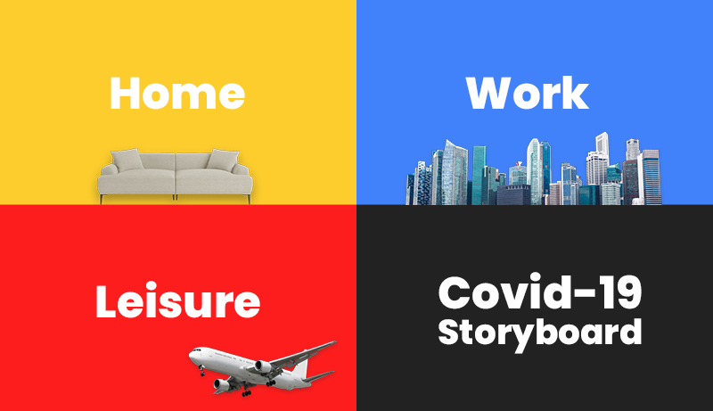
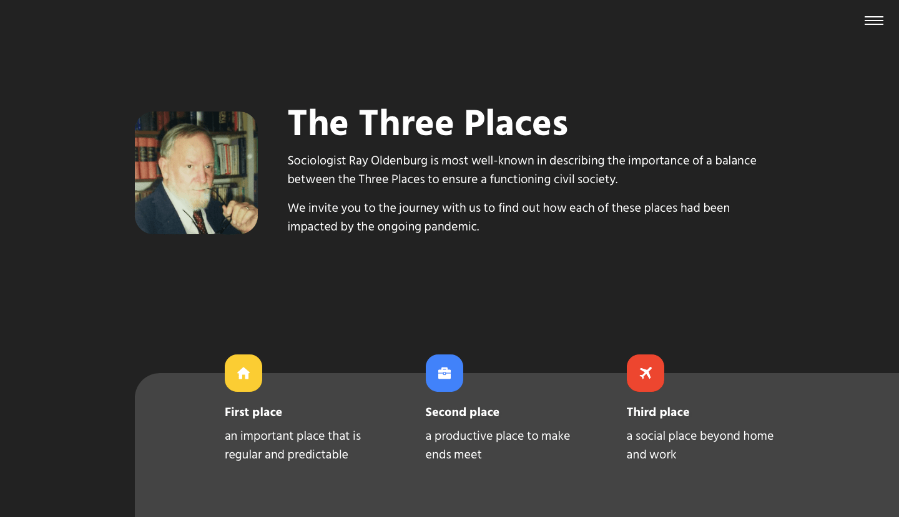
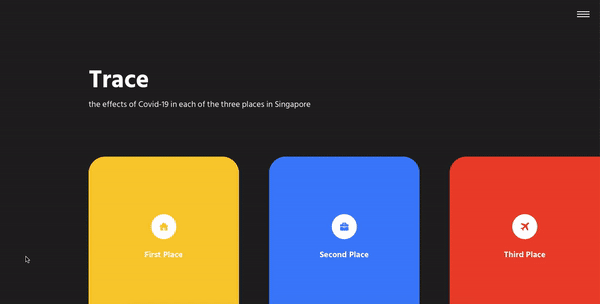

SG X COVID-19
Storytelling Website

Introduction
This project aims to inform the public on the Singapore government initiatives related to Covid-19. A storytelling site would be a useful tool to consolidate the information scattered on different sources, such that readers can explore the various initiatives in a single site, learn more about what benefits (from the Covid-19 situation) that they are entitled to, and learn more about coping during this time. At the same time, the storytelling site could be presented to the rest of the world, so that other countries might mirror the better actions that Singapore had taken.
Strategy & Approach
In order to fit disparate initiatives into a compelling story for the general public, the storyline is crafted with the "Three Places" concept by sociologist Ray Oldenburg.
The concept entailed the notion of the balancing between three places - Home (First Place), Work (Second Place) and Public (Third Place) in order to ensure a functioning civil society. As such, angling the consolidation of initiatives into each of the three places would be able to form a compelling story since most of the general public are affected by Covid-19 pandemic in each of the three places.
Colour Palette
The 3 primary colours of the colour wheel are selected to represent the three respective places where the life of an individual primarily revolves.
Text
#222222
Home
#FDCD2D
Work
#4182FA
Public
#FD1D1D
The Design
Above the fold
The video backdrop A City at a Standstill: Singapore from Above (The Straits Times, 2020) is used to present the impact of Covid-19 to Singapore. The colour of the "X" between Singapore and Covid-19 is formed with gradient transition between the three primary colours which correspond to the three places.

The Three Places
Introduce the "Three Places" concept to the audience with a simple explanation.
Subnavigation
Serving as a table of contents of the storyboard, readers can hover over the respective places to view the realistic photo and navigate to the corresponding sections.
Cover Page for Each Place
A short animation is embedded for the cover page of each place, with the corresponding colour code and floating objects to indicate the beginning of a new section/chapter. Readers are able to view details under each place followed by the respective cover pages.